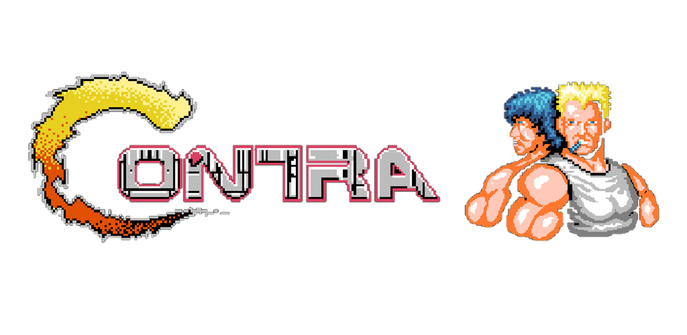
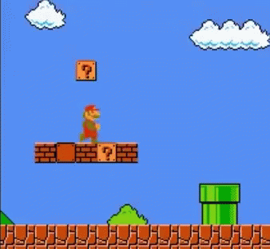
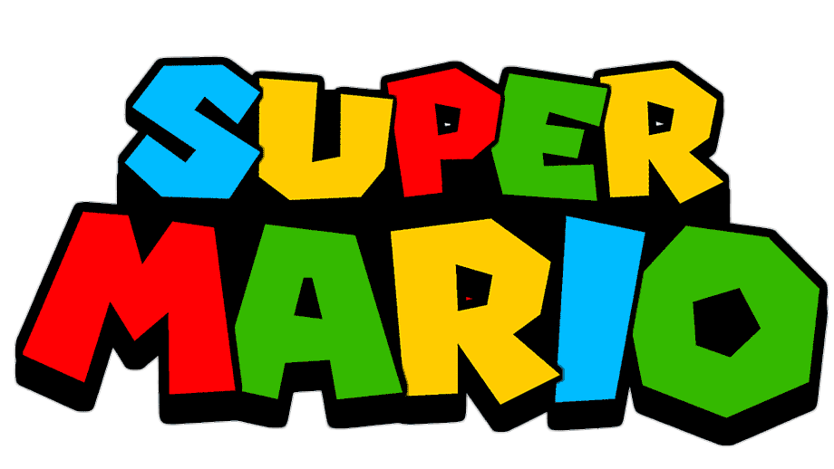

1.)Street Fighter 2


Street Fighter II: The World Warrior[b] is a 2D fighting game developed by Capcom and originally released for arcades in 1991. It is the second installment in the Street Fighter series and the sequel to 1987's Street Fighter. It is Capcom's fourteenth game to use the CP System arcade system board. Street Fighter II vastly improved many of the concepts introduced in the first game, including the use of special command-based moves, a combo system, a six-button configuration, and a wider selection of playable characters, each with a unique fighting style.
2.)Contra


Contra[a] is a run and gun video game developed and published by Konami, originally developed as a coin-operated arcade video game in 1986[5][6] and released on February 20, 1987.[7][8] A home version was released for the Nintendo Entertainment System in 1988, along with ports for various home computer formats, including the MSX2. The arcade and computer versions were localized as Gryzor in Europe, and the NES version as Probotector in PAL regions and France.
3.)Super Mario

Super Mario[a] (also known as Super Mario Bros.[b] and Mario[c]) is a platform game series created by Nintendo starring their mascot, Mario. It is the central series of the greater Mario franchise. At least one Super Mario game has been released for every major Nintendo video game console. However, there have also been a number of Super Mario video games released on non-Nintendo gaming platforms.[1] There are more than 20 games in the series.